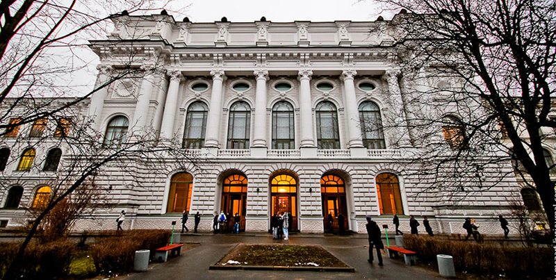

Михаил Васильевич Фрунзе

М. В. Фрунзе
М. В. Фрунзе родился зимой 1885 года в городе Пишпек (сейчас Бишкек, Киргизия) в семье фельдшера. Впервые познакомился с революционными идеями в кружке самообразования в гимназии в г. Верном (сейчас Алма-Аты, Казахстан).
Вид на Бишкек

Здание Петербургского Политехнического института
В 1904 году поступил в Петербургский политехнический институт, вступил в Российскую социал-демократическую рабочую партию. В ноябре за свои революционные идеи был впервые арестован.
В период революции 1905—1907 годов вёл партийную работу в Москве, с мая — в Иваново-Вознесенске и Шуе (под псевдонимом «Товарищ Арсений»), член комитета РСДРП. Один из руководителей Иваново-Вознесенской всеобщей стачки текстильщиков (май — июль 1905 года). Во главе боевой дружины иваново-вознесенских и шуйских рабочих участвовал в Декабрьском вооружённом восстании 1905 года в Москве. В 1906 — делегат IV съезда РСДРП в Стокгольме от Иваново-Вознесенской окружной организации, где познакомился с В. И. Лениным.
Стачка тескильщиков в Иваново-Вознесенске (автор фото неизвестен)
Вид на Читу
В 1907 избран делегатом V съезда РСДРП, но был арестован и осуждён на 4 года каторги. 21 февраля 1907 года (уже будучи заключённым) вместе с Павлом Гусевым пытался около деревни Дмитровки убить полицейского урядника Никиту Перлова. 24 марта арестован в Шуе и привлечён по делу о вооружённом сопротивлении полиции. За покушение на убийство дважды (27.1.1909 и 22-23.9.1910) приговорён к смертной казни, заменённой под нажимом общественного мнения на 6 лет каторжных работ. После заключения во Владимирской, Николаевской и Александровской каторжных тюрьмах в марте 1914 отправлен на вечное поселение в село Манзурку Иркутской губернии. В августе 1915, после ареста за создание организации ссыльных, бежал в Читу, где проживал по паспорту В. Г. Василенко, работал в статистическом отделе переселенческого управления и в редакции еженедельной газеты «Забайкальское обозрение». В 1916 переехал в Москву, а затем в начале апреля с паспортом на имя Михаил Александрович Михайлов и направлением от Всероссийского земского союза — в Белоруссию.
В апреле 1916 года Фрунзе по заданию партии под фамилией Михайлов поступил на должность статистика в комитет Западного фронта Всероссийского земского союза (тыловая, преимущественно снабженческая организация). 4 марта 1917 года приказом гражданского коменданта города Минска Михаил Александрович Михайлов был назначен временным начальником милиции Всероссийского земского союза по охране порядка в городе Минске. Эта дата считается Днём рождения белорусской милиции. В ночь с 4 на 5 марта 1917 года руководимые М. В. Фрунзе (Михайловым) отряды боевых дружин рабочих вместе с солдатами приданных частей минского гарнизона разоружили полицию города, захватили городское полицейское управление, а также архивное и сыскное отделения и взяли под охрану важнейшие государственные учреждения. В Минске Михайлов прослужил до сентября 1917-го, а затем партия перебросила его в город Шую. С конца августа представитель Шуи на Всероссийском демократическом совещании в Петрограде.
Вид на Шую

Карта новообразованной Иваново-Вознесенской губернии
В первой половине 1918 года — председатель Иваново-Вознесенского губкома РКП(б), губисполкома, губсовнархоза и военный комиссар Иваново-Вознесенской губернии. С августа 1918 — военный комиссар Ярославского военного округа. В феврале — мае 1919 командующий 4-й армии РККА, разгромившей белых в ходе весеннего наступления, в мае—июне — Туркестанской армии, в марте—июле — также Южной группой войск Восточного фронта, с 19 июля по 15 августа — всего Восточного фронта.
С августа 1918 — военный комиссар Ярославского военного округа. В феврале — мае 1919 командующий 4-й армии РККА, разгромившей белых в ходе весеннего наступления, в мае—июне — Туркестанской армии, в марте—июле — также Южной группой войск Восточного фронта, с 19 июля по 15 августа — всего Восточного фронта. За осуществление успешных наступательных операций против главных сил адмирала А. В. Колчака награждён орденом Красного Знамени. С 15 августа 1919 по 10 сентября 1920 — командующий Туркестанского фронта. Член Туркестанской комиссии ВЦИК и СНК (октябрь 1919 — июль 1920); сторонник «организации» революции в Бухарском эмирате путём вторжения Красной армии, руководил штурмом Бухары 30 августа — 2 сентября 1920.
А. В. Колчак
П. Н. Врангель
С 27 сентября командовал Южным фронтом, организатор изгнания войск генерала П. Н. Врангеля из Северной Таврии и Крыма. Борьбу с врангелевцами вёл совместно с Повстанческой армией Н. И. Махно, с которым в октябре 1920 года подписал соглашение о единстве действий против белых войск и установил хорошие личные отношения. После штурма Перекопа послал врангелевским войскам телеграмму, предлагавшую им свободно покинуть Крым в обмен на прекращение сопротивления. 3 декабря 1920 года назначен уполномоченным Реввоенсовета на Украине и командующим вооружёнными силами Украины и Крыма, одновременно избран членом Политбюро ЦК КП(б)У, с февраля 1922 года — заместитель председателя СНК УССР. По распоряжению из Москвы руководил разгромом Повстанческой армии Махно (за что в 1924 награждён вторым орденом Красного Знамени) и отряда Ю. О. Тютюнника.
С марта 1924 — заместитель председателя Реввоенсовета СССР и наркома по военным и морским делам, с апреля 1924 — одновременно начальник штаба Красной Армии и начальник Военной академии РККА. С января 1925 года председатель Реввоенсовета СССР и нарком по военным и морским делам. Под руководством Фрунзе проводилась военная реформа 1924—1925 гг. — сокращение численности армии, введение принципа единоначалия, реорганизация военного аппарата и политического управления Красной Армии, сочетание в структуре Вооружённых сил постоянной армии и территориальных-милиционных формирований. Автор ряда военно-теоретических работ. Военная доктрина, разработанная Фрунзе, строилась на применении марксизма к военной теории и отводила особое место в армии политическим отделам и коммунистическим ячейкам. Член ВЦИК, президиума ЦИК СССР. С 1921 — член ЦК РКП(б), с 1924 — кандидат в члены Политбюро ЦК, кандидат в члены Оргбюро ЦК РКП(б).
Военная академия РККА
Похороны М. В. Фрунзе
Умер осенью 1925 года после операции язвы желудка от заражения крови (официальная версия). Сразу после смерти Фрунзе по Москве поползли слухи, что он был убит по заказу Троцкого[10], которого Фрунзе сменил на посту Наркомвоена и противником которого Фрунзе был при жизни. Существует версия, что его смерть была организована Сталиным, который особенно настаивал на проведении операции. Эта версия отражена Пильняком в его «Повести непогашенной луны», а также в фильмах, поставленных по этим произведениям. Версия об организации убийства описывается в книге Бажанова «Воспоминания бывшего секретаря Сталина». Похоронен в Москве около Кремлевской стены.